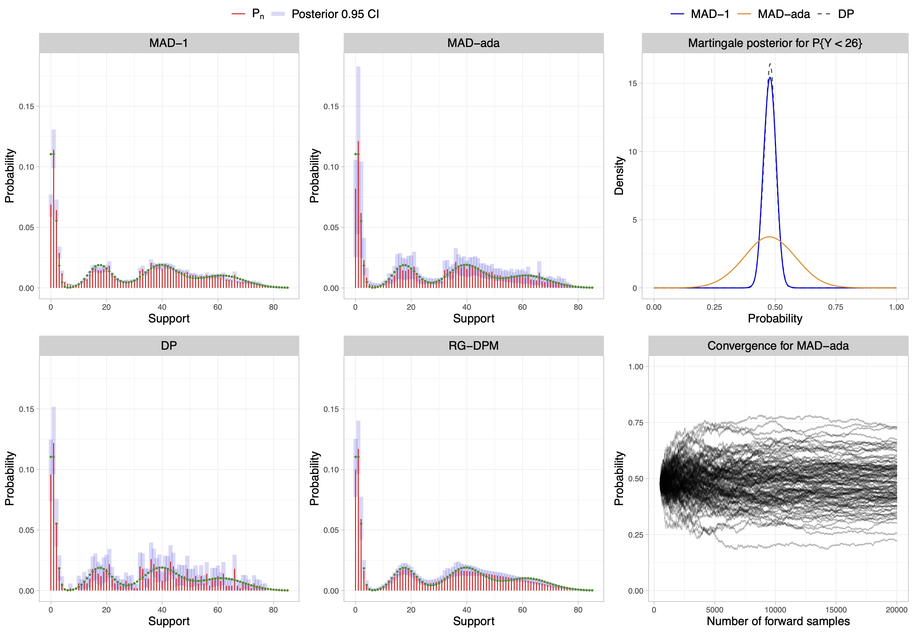
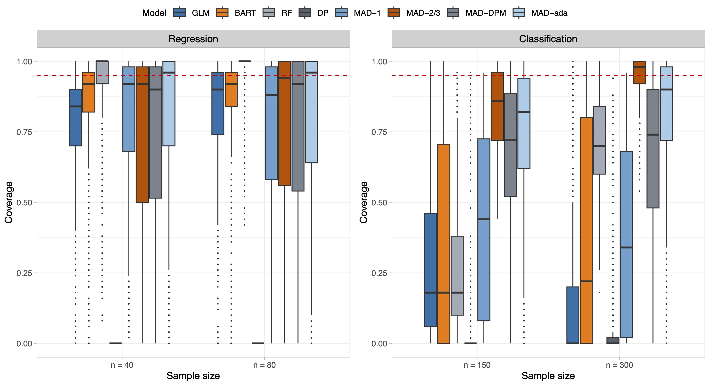

ABACO26
Nonparametric predictive inference for discrete data via Metropolis-adjusted Dirichlet sequences
Università degli Studi di Milano-Bicocca
2026-02-06
Warm thanks
Davide Agnoletto (Duke University)
David Dunson (Duke University)
Foundations
- De Finetti’s representation Theorem (De Finetti 1937) it provides the fundamental justification to the two approaches to Bayesian statistics: the hypothetical approach and the predictive approach.
De Finetti’s representation theorem
Let (Y_n)_{n\ge 1}, be a sequence of exchangeable random variables. Then there exists a unique probability measure \Pi such that, for any n\ge 1 and A_1,\dots,A_n \mathbb{P}(Y_1 \in A_1,\ldots,Y_n \in A_n) = \int_{\mathcal{P}} \prod_{i=1}^n p(A_i)\,\Pi(\mathrm{d}p).
- In a hierarchical formulation, we will say that (Y_n)_{n \ge 1} is exchangeable if and only if \begin{aligned} Y_i \mid P &\overset{\textup{iid}}{\sim} P, \qquad i \ge 1, \\ P &\sim \Pi, \end{aligned} where P is a random probability measure and \Pi is the prior law.
Hypothetical approach
The hypothetical approach represents the the most common way to operate within the Bayesian community.
In a parametric setting, \Pi has support on a class \Theta\subseteq\mathbb{R}^p with p<\infty, such that \boldsymbol{\theta}\in\Theta indexes the class of distributions \mathcal{P}_{\boldsymbol{\theta}}=\{P_{\boldsymbol{\theta}} : \boldsymbol{\theta} \in \Theta\subseteq\mathbb{R}^p\}.
Bayes’ rule takes the well-known formulation: \pi(\boldsymbol{\theta}\mid y_{1:n}) \propto \pi(\boldsymbol{\theta}) \prod_{i=1}^n p_{\boldsymbol{\theta}}(y_i), where \pi and p_{\boldsymbol{\theta}} denote the probability density functions associated with \Pi and P_{\boldsymbol{\theta}}, respectively.
However, when the link between observations and parameter of interest cannot be easily expressed through a distribution function, the traditional hypothetical approach fails.
Solution: generalized posterior distributions, sometimes called Gibbs-posteriors.
This is a lively recent topic, see for instance: Chernozhukov and Hong (2003); Bissiri et al. (2016) Heide et al. (2020); Grünwald and Mehta (2020); Knoblauch et al. (2022); Matsubara et al. (2022); Matsubara et al. (2023); Jewson and Rossell (2022); Rigon et al. (2023); Agnoletto et al. (2025).
Generalizations of the hypothetical approach
- Bissiri et al. (2016) showed that the generalized posterior \pi_\omega(\boldsymbol{\theta} \mid y_{1:n}) \propto \pi(\boldsymbol{\theta}) \exp\left\{ - \omega \sum_{i=1}^n \ell(\boldsymbol{\theta}; y_i) \right\}, is the only coherent update of the prior beliefs about \boldsymbol{\theta}^* = \arg\min_{\boldsymbol{\theta}\in\Theta} \int_{\mathcal{Y}} \ell(\boldsymbol{\theta}; y)\, F_0(\mathrm{d}y), where \ell(\boldsymbol{\theta}, y) is a loss function, \omega is the loss-scale, and F_0 is the unknown true sampling distribution.
Learning the loss scale \omega from the data is a delicate task. Assuming a prior for \omega can lead to degenerate estimates if not accompanied by additional adjustments to the loss function.
However, there are several solutions for its calibration: Holmes and Walker (2017); Lyddon et al. (2019); Syring and Martin (2019); Matsubara et al. (2023).
Predictive approach
- Taking a predictive approach, one can implicitly characterize the prior via de Finetti theorem by specifying the sequence of predictive distributions of an exchangeable sequence: P_n(A) := \mathbb{P}(Y_{n+1}\in A\mid y_{1:n}), \qquad n \ge 1. This leads to an exchangeable sequences iff the conditions in Fortini et al. (2000) are satisfied.
- Example: the predictive construction of a Dirichlet process prior is such that Y_1\sim P_0 and Y_{n+1}\mid y_{1:n}\sim P_n for n\ge 1, where P_n(A) = \frac{\alpha}{\alpha+n} P_0(A) + \frac{1}{\alpha+n}\sum_{i=1}^n\mathbb{1}(y_i\in A), for any measurable set A.
- The possibility of specifying a sequence of one-step-ahead predictive distributions is appealing:
- it bypasses direct elicitation of the prior;
- it explicitly connects prediction and inference (see the next slide);
Connecting inference and prediction I
The posterior P \mid y_{1:n} is usually obtained through Bayes theorem, but this is not the only way.
We can characterize both prior and posterior of P through the predictive distributions P_n, which indeed contains all the necessary information.
- If (Y_n)_{n \ge 1} is exchangeable, then the prior and posterior mean of P coincide with the predictive: P_0(A) = \mathbb{P}(Y_1\in A) = \mathbb{E}\{P(A)\}, \qquad P_n(A) = \mathbb{P}(Y_{n+1}\in A\mid y_{1:n}) = \mathbb{E}(P(A) \mid y_{1:n}), \qquad n \ge 1.
- A deeper result holds, which is a corollary of Finetti theorem (Fortini and Petrone 2012).
De Finetti’s representation theorem (predictive form)
Let (Y_n)_{n \ge 1} be an exchangeable sequence with predictive distributions (P_n)_{n \ge 1}. Then P_n converges weakly (a.s. \mathbb{P}) to a random probability measure P distributed according to \Pi as n \to \infty.
Connecting inference and prediction II
- In other words, the sequence of predictive distributions P_n converges to a random probability measure P with prior distribution \Pi. The source of randomness is the data
Y_1, Y_2, Y_3, \dots Intuitively, before observing the data, our predictions eventually reflect the prior.
Given y_{1:n}, the sequence P_{n+m} converges weakly (a.s. \mathbb{P}) as m \to \infty to a random probability measure with posterior distribution \Pi(\cdot \mid y_{1:n}). The source of randomness is the future data
Y_{n+1}, Y_{n+2}, Y_{n+3}, \dots .This provides a natural alternative interpretation of the posterior distribution P \mid y_{1:n} and a practical algorithm for sampling from it, called predictive resampling.
Intuitively, posterior uncertainty arises from lack of knowledge about future observations. If we knew them, the posterior would collapse to a point mass (Bayesian consistency).
- This reasoning is at the heart of martingale posteriors (Fong et al. 2023).
Generalizations of the predictive approach
- Defining a sequence of predictive laws P_n that guarantees exchangeability—i.e., satisfies the two-step-ahead conditions of Fortini et al. (2000)—is a difficult task in practice.
Solution: replace exchangeability with the weaker requirement that (Y_n)_{n\ge1} is conditionally identically distributed (CID), also known as martingale posteriors.
The CID condition requires \mathbb{P}(Y_{n+k} \in \cdot \mid y_{1:n}) = \mathbb{P}(Y_{n+1} \in \cdot \mid y_{1:n}) = P_n(\cdot), \qquad \text{for all} \quad k \ge 1, \; n \ge 1. It is sufficient to verify this condition for k = 1 in order to ensure its validity for all k \ge 1.
Equivalently, Fong et al. (2023) express the above condition in a way that emphasizes the martingale property of the predictive distributions \mathbb{E}\{P_{n+1}(\cdot) \mid y_{1:n}\} = P_n(\cdot), \qquad n \ge 1.
Nonparametric modelling of count data
- Bayesian nonparametric modeling of counts distributions is a challenging task. Nonparametric mixtures of discrete kernels (Canale and Dunson 2011) can be cumbersome in practice.
- Alternatively, one could directly specify a DP prior on the data generator as Y_i\mid P \overset{\textup{iid}}{\sim} P,\quad P\sim\mathrm{DP}(\alpha, P_0), for Y_i\in\mathcal{Y}=\{0,1,\ldots\}, i=1,\ldots,n, where \alpha is the precision parameter and P_0 a base parametric distribution, such as a Poisson.
The Dirichlet process is mathematically convenient. However, the corresponding posterior lacks smoothing, which can lead to poor performance.
Within the hypothetical approach, it is unclear how to specify a nonparametric process with the same simplicity and flexibility as the DP prior while allowing for smoothing.
- Our proposal: a predictive sequence tailored to count data inspired by kernel density estimators.
Illustrative example I

- Left plot: posterior mean of a DP. Right plot: posterior mean of the proposed MAD sequence.
A recursive predictive rule
- Intuitively, a better estimator would be obtained by replacing the indicator \mathbb{1}(\cdot) of the DP predictive scheme with a kernel that allows the borrowing of information between nearby values.
Let Y_1\sim P_0 and Y_{n+1} \mid y_{1:n} \sim P_n for n\ge 1, and let K_n(\cdot \mid y_n) be a sequence of transition kernels. We define the predictive distribution recursively: P_n(\cdot) = \mathbb{P}(Y_{n+1}\in \cdot\mid y_{1:n}) = (1-w_n) P_{n-1}(\cdot) + w_n K_{n}(\cdot\mid y_n), \qquad n \ge 1, where (w_n)_{n\ge1} are decreasing weights such that w_n\in(0,1), \sum_{n\ge1}w_n = \infty, and \sum_{n\ge1}w_n^2<\infty.
The choice of weights w_n = (\alpha +n)^{-1} gives the following DP-like predictive rule P_n(\cdot) = \frac{\alpha}{\alpha + n} P_0(\cdot) + \frac{1}{\alpha + n}\sum_{i=1}^nK_i(\cdot\mid y_i). Hence, the predictive law of a DP is a special case whenever K_i(\cdot \mid y_i) = \delta_{y_i}(\cdot).
The above sequence, beyond the DP special case, is not exchangeable and it will depend on the order of the data. Moreover, without further restrictions, is not necessarily CID!
Metropolis-adjusted Dirichlet (MAD) sequences
We assume that K_{n}(\cdot\mid y_n) is a Metropolis-Hastings kernel centered in y_n having pmf: k_{n}(y\mid y_n) = \gamma_{n}(y,y_n) k_*(y\mid y_n) + \mathbb{1}(y=y_n)\Big[\sum_{z\in\mathcal{Y}}\big\{1-\gamma_{n}(z,y_n)\big\}k_*(z\mid y_n)\Big], with acceptance probability \gamma_{n}(y,y_n) = \gamma(y, y_n, P_{n-1}) = \min\left\{1,\frac{p_{n-1}(y) k_*(y_n\mid y)}{p_{n-1}(y_n) k_*(y\mid y_n)}\right\}, where p_{n-1} is the probability mass functions associated to P_{n-1} and k_*(\cdot\mid y_n) is the pmf of a discrete base kernel centered at y_n.
We refer to P_n above as the Metropolis-adjusted Dirichlet (MAD) distribution with weights (w_n)_{n\ge1}, base kernel k_* and initial distribution P_0. We call (Y_n)_{n \ge 1} a MAD sequence.
Theorem (Agnoletto, R. and Dunson, 2025)
Let (Y_n)_{n\ge1} be a MAD sequence. Then, for every set of weights (w_n)_{n \ge 1}, discrete base kernel k_*, and initial distribution P_0, the sequence (Y_n)_{n\ge1} is conditionally identically distributed (CID).
Bayesian properties of CID sequences I
Corollary (Aldous 1985; Berti et al. 2004)
Consider a MAD sequence (Y_n)_{n\ge1}. Then, \mathbb{P}-a.s.,
(a) The sequence is asymptotically exchangeable, that is (Y_{n+1}, Y_{n+2}, \ldots) \overset{\textup{d}}{\longrightarrow} (Z_1, Z_2, \ldots), \qquad n \rightarrow \infty, where (Z_1,Z_2,\ldots) is an exchangeable sequence with directing random probability measure P;
(b) the corresponding sequence of predictive distributions (P_n)_{n\ge1} weakly converge to a random probability measures P (a.s. \mathbb{P}).
An asymptotic equivalent of de Finetti’s theorem holds: each MAD sequence has a corresponding unique prior on P.
The ordering dependence will vanish asymptotically and, informally, Y_i \mid P \overset{\mathrm{iid}}{\sim} P for large n.
The random probability measure P exists and is defined as the limit of the predictive distributions. However, it is not available explicitly.
Bayesian properties of CID sequences II
Corollary (Aldous 1985; Berti et al. 2004)
Let \theta = P(f) = \sum_{y \in \mathcal{Y}} f(y) p(y) and analogously \theta_n = P_n(f) = \sum_{y \in \mathcal{Y}} f(y) p_n(y) be any functional of interest. Consider a MAD sequence (Y_n)_{n\ge1}.
Then, \mathbb{P}-a.s., for every n\ge1 and every integrable function f:\mathcal{Y}\rightarrow\mathbb{R}, we have \mathbb{E}(\theta \mid y_{1:n}) = \mathbb{E}\{P(f) \mid y_{1:n}\} = P_n(f) = \theta_n
Broadly speaking, the posterior mean of any functional of interest of P coincides with the functional of the predictive.
Moreover, \mathbb{E}\{P(f)\}= P_0(f) = \theta_0 for every integrable function f, so that P_0 retains the role of a base measure as for standard Dirichlet sequences, providing an initial guess at P.
- Uncertainty quantification for \theta=P(f) is carried out by predictive resampling (Fong et al. 2023).
Predictive resampling for MAD sequences
Algorithm (Fortini and Petrone 2020):
- Compute P_n(\cdot) from the observed data y_{1:n}
- Set N\gg n
- For j = 1,\ldots,B
- For i=n+1,\ldots,N
- Sample Y_i\mid y_{1:i-1}\sim P_{i-1}
- Update P_i(\cdot) = (1-w_i)P_{i-1}(\cdot) + w_i K_{i-1}(\cdot\mid y_i)
- End For
- For i=n+1,\ldots,N
- End For
- Return P_N^{(1)}(\cdot),\ldots,P_N^{(B)}(\cdot), an iid sample from the distribution of P_N(\cdot)\mid y_{1:n}
On the choice of the base kernel
- In principle, any discrete distribution can be chosen as the base kernel k_*. However, it is natural to consider choices that allow the kernel to be centered at y_n while permitting control over the variance.
- We consider a rounded Gaussian distribution centered in y_n, with pmf k_*(y\mid y_n, \sigma) = \frac{\int_{y-1/2}^{y+1/2}\mathcal{N}(t\mid y_n, \sigma^2) \mathrm{d}t}{\sum_{z\in\mathcal{Y}} \int_{z-1/2}^{z+1/2}\mathcal{N}(t\mid y_n, \sigma^2) \mathrm{d}t}, for n\ge1, where \mathcal{N}(\cdot\mid y_n,\sigma^2) denotes a normal density function with mean y_n and variance \sigma^2.

Role of the weights in controlling posterior variability
- It can be shown that the distribution of P(A)\mid y_{1:n} is approximated by \mathcal{N}(P_n(A), \Sigma_n r_n^{-1}) for n large, where the variance is \Sigma_n r_n^{-1} \approx \mathbb{E}\{[P_{n+1}(A)-P_n(A)]^2\mid y_{1:n}\}\sum_{k>n+1}w_k^2.
Weights that decay to zero quickly induce fast learning and convergence to the asymptotic exchangeable regime.
But small values of w_n leads to poor learning and underestimation of the posterior variability.
Possible choices are w_n=(\alpha+n)^{-1}, w_n=(\alpha+n)^{-2/3} (Martin and Tokdar 2009), and w_n=(2 - n^{-1})(n+1)^{-1} (Fong et al. 2023).
We consider adaptive weights w_n=(\alpha+n)^{-\lambda_n}, \qquad \lambda_n=\lambda+(1+\lambda)\exp\bigg\{-\frac{1}{N_*}n\bigg\}, with \lambda\in(0.5,1], N_*>0.
Illustrative example II

Multivariate count and binary data
- Extending MAD sequences for multivariate data is straightforward using a factorized base kernel k_*(\bm y\mid\bm y_n) = \prod_{j=1}^d k_*(y_j\mid y_{n,j}), with \bm y=(y_1,\ldots,y_d) and \bm y_n=(y_{n,1},\ldots,y_{n,d}).
- MAD sequences can be employed for modeling multivariate binary data using an appropriate base kernel.
- A natural step further is to use MAD sequences for nonparametric regression and classification.
Simulations I
Out-of-sample prediction accuracy evaluated in terms of MSE and AUC for regression and classification, respectively.
| Regression (MSE) | Classification (AUC) | ||||
|---|---|---|---|---|---|
| n=40 | n=80 | n=150 | n=300 | ||
| GLM | 120.77 [51.51] | 94.93 [8.37] | 0.796 [0.014] | 0.809 [0.007] | |
| BART | 101.17 [12.69] | 74.17 [10.00] | 0.863 [0.026] | 0.932 [0.009] | |
| RF | 99.98 [7.45] | 87.75 [6.53] | 0.882 [0.025] | 0.913 [0.015] | |
| DP | 1450.21 [5.53] | 1395.61 [8.72] | 0.644 [0.011] | 0.724 [0.012] | |
| MAD-1 | 91.07 [10.35] | 73.96 [7.60] | 0.873 [0.014] | 0.899 [0.008] | |
| MAD-2/3 | 88.83 [13.00] | 73.18 [9.58] | 0.869 [0.015] | 0.899 [0.009] | |
| MAD-dpm | 87.41 [12.36] | 72.07 [9.48] | 0.872 [0.014] | 0.901 [0.008] | |
| MAD-ada | 90.61 [10.28] | 73.45 [7.69] | 0.874 [0.014] | 0.900 [0.008] |
Simulations II
Application
- We analyze the occurrence rates of 4 species corvids in Finland in year 2009 across different temperatures and habitats.

Application II

Thank you!
The main paper is:
Agnoletto, D., Rigon, T., and Dunson D.B. (2025+). Nonparametric predictive inference for discrete data via Metropolis-adjusted Dirichlet sequences. arXiv:2507.08629